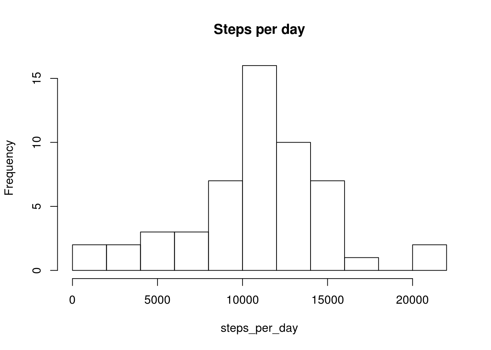
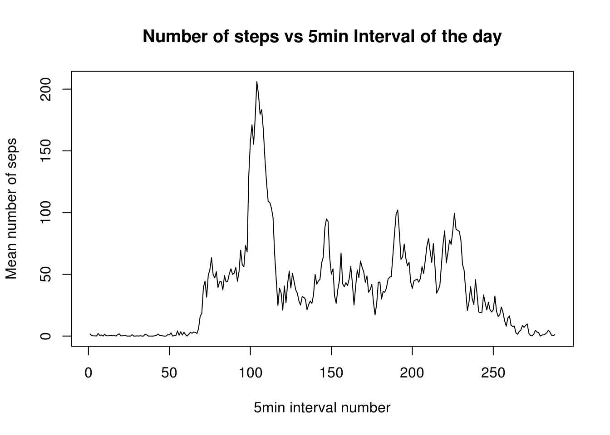
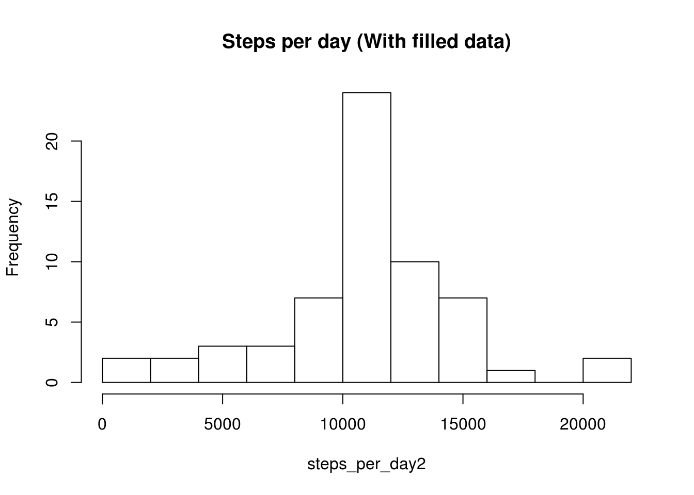
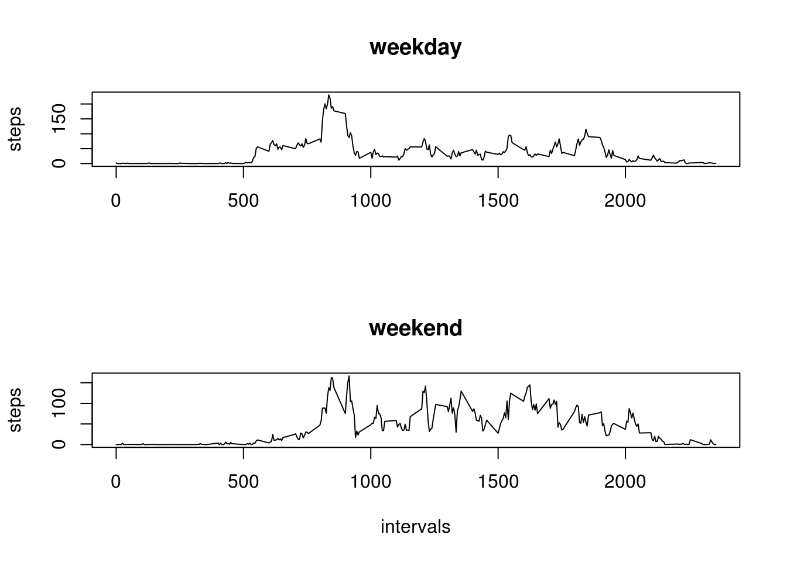

Reading the data:
setwd("/home/luis/repo/ReproductibleResearch/RR1/RepData_PeerAssessment1")
actdata <- read.csv("activity.csv")With this we have a dataframe with the data. We will create an additional dataframe with clean data.
Cleaning the data:
adc <- actdata[!is.na(actdata$steps),]“adc” is a second dataframe which the rows with “NA” in the “steps” column had been removed.
We first calculate the sum of the steps taken each day with the tapply function.
Sum per date:
steps_per_day <- tapply(actdata$steps,actdata$date,FUN = sum)Following this, we plot an histogram showing the number of days with certains amount of steps taken (we use 10 boxes)
Histogram of steps per day (Number of days in which the x-axis amount of steps is done):
hist(steps_per_day, breaks = 10, main = "Steps per day")
We can calculate the mean and the median of the total steps taken each day:
mean(steps_per_day[!is.na(steps_per_day)])## [1] 10766.19median(steps_per_day[!is.na(steps_per_day)])## [1] 10765As we can see the mean of the total steps is 10766 and the median 10765. The values are very close.
Calculating and plotting the mean steps for each 5 minutes interval of the day, using again tapply and the basic plot system.
mean_steps <- tapply(adc$steps,adc$interval,FUN = mean)
maint = "Number of steps vs 5min Interval of the day"
ylabt = "Mean number of seps"
xlabt = "5min interval number"
plot(mean_steps,type = "l", main = maint, ylab = ylabt, xlab = xlabt)
We can see that the interval with higher mean steps is at 8:35 (index 104)
which.max(mean_steps)## 835
## 104With a mean value over 206
max(mean_steps)## [1] 206.1698We can calculate the number of rows with NA, substracting the number of rows of the clean dataframe from the number of row of the original dataframe.
dim(actdata)[1] - dim(adc)[1]## [1] 2304The number of “NA” in the steps column is 2304.
We will fill the missing “NA” values in the original dataframe, and we are going to do it using the mean value for that interval.
actdata2 <- actdata
#dummy <- as.vector(mean_steps)
for (i in 1:dim(actdata2)[1]) {
#print(i)
if (is.na(actdata2$steps[i])) {
#print(actdata2$interval[i]/5)
#print(dummy[(actdata2$interval[i]/5)+1])
actdata2$steps[i] <- as.vector(mean_steps[as.character(actdata2$interval[i])])
}
}We proceed to calculate the new histogram
steps_per_day2 <- tapply(actdata2$steps,actdata2$date,FUN = sum)
hist(steps_per_day2, breaks = 10, main = "Steps per day (With filled data)")
And the new mean and median
mean(steps_per_day2[!is.na(steps_per_day2)])## [1] 10766.19median(steps_per_day2[!is.na(steps_per_day2)])## [1] 10766.19The news values are 10766.19 and 10766.19. Which, as we can see:
mea1 <- mean(steps_per_day[!is.na(steps_per_day)])
med1 <- median(steps_per_day[!is.na(steps_per_day)])
mea2 <- mean(steps_per_day2[!is.na(steps_per_day2)])
med2 <- median(steps_per_day2[!is.na(steps_per_day2)])
mea2-mea1## [1] 0med2-med1## [1] 1.188679in the case of the mean is exactly the same as the originals, with a slight difference in the median, due to the way we decide to replace the “NA” values.
Here we can see the difference in steps-per-day between the two datasets
steps_per_day2 - steps_per_day## 2012-10-01 2012-10-02 2012-10-03 2012-10-04 2012-10-05 2012-10-06
## NA 0 0 0 0 0
## 2012-10-07 2012-10-08 2012-10-09 2012-10-10 2012-10-11 2012-10-12
## 0 NA 0 0 0 0
## 2012-10-13 2012-10-14 2012-10-15 2012-10-16 2012-10-17 2012-10-18
## 0 0 0 0 0 0
## 2012-10-19 2012-10-20 2012-10-21 2012-10-22 2012-10-23 2012-10-24
## 0 0 0 0 0 0
## 2012-10-25 2012-10-26 2012-10-27 2012-10-28 2012-10-29 2012-10-30
## 0 0 0 0 0 0
## 2012-10-31 2012-11-01 2012-11-02 2012-11-03 2012-11-04 2012-11-05
## 0 NA 0 0 NA 0
## 2012-11-06 2012-11-07 2012-11-08 2012-11-09 2012-11-10 2012-11-11
## 0 0 0 NA NA 0
## 2012-11-12 2012-11-13 2012-11-14 2012-11-15 2012-11-16 2012-11-17
## 0 0 NA 0 0 0
## 2012-11-18 2012-11-19 2012-11-20 2012-11-21 2012-11-22 2012-11-23
## 0 0 0 0 0 0
## 2012-11-24 2012-11-25 2012-11-26 2012-11-27 2012-11-28 2012-11-29
## 0 0 0 0 0 0
## 2012-11-30
## NAThe only difference is the steps added in the missing value days:
steps_per_day2[is.na(steps_per_day)]## 2012-10-01 2012-10-08 2012-11-01 2012-11-04 2012-11-09 2012-11-10
## 10766.19 10766.19 10766.19 10766.19 10766.19 10766.19
## 2012-11-14 2012-11-30
## 10766.19 10766.19Adding a new column classifying the dates between “weekdays” and “weekend”
myfunction <- function(ddate){
if (weekdays(as.Date(ddate)) == "zaterdag" | weekdays(as.Date(ddate)) == "zondag"){
return("weekend")
} else {
return("weekday")
}
}
actdata2$daytype <- apply(actdata2,1,function(row) myfunction(row[2]))And plotting:
intervals <- actdata$interval[actdata$date == "2012-11-04"]
mswd <- tapply(actdata2$steps[actdata2$daytype == "weekday"],actdata2$interval[actdata2$daytype == "weekday"],FUN = mean)
mswe <- tapply(actdata2$steps[actdata2$daytype == "weekend"],actdata2$interval[actdata2$daytype == "weekend"],FUN = mean)
layout(c(1,2))
plot(intervals,mswd,type = "l",main = "weekday",ylab = "steps",xlab = "")
plot(intervals,mswe,type = "l",main = "weekend",ylab = "steps")